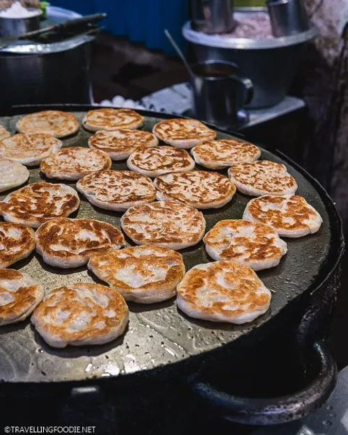

Types of Food Experiences

Street Food
Simple, tasty, and affordable. Street food lets you eat like a local. From tacos in Mexico to pad Thai in Thailand, the best flavors are often found on the street.

Local Markets
Visit fresh markets to see colorful fruits, vegetables, and spices. You can also try new foods and buy ingredients to cook your own meal.
Fine Dining
For special occasions, try elegant restaurants. Expert chefs create beautiful dishes that mix tradition with creativity.